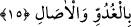

Hac maksadıyla giderken Bağdad’a yolum düştü. O zaman sûfîliğin gereklerini sıkı
sıkıya yerine getiriyordum. Yâni irâdeyi keskin, mücâhedeyi sıkı tutuyor, mâsivâyı
bertaraf etmeye çalışıyordum. Kırk gündür doğru dürüst bir şey yememiş, Cüneyd’in
yanına gitmemiştim. Tahâret üzere bulunduğum sırada çölde bir kuyunun başında su içen
bir ceylan gördüm. Ben de çok susamıştım. Kuyuya yaklaşır yaklaşmaz ceylan kaçtı. Bir
de baktım ki su, kuyunun tâ dibinde! Yürüdüm gittim. Bir yandan da: ‘Efendim! Senin
yanında şu ceylan kadar değerim yokmuş.’ diyordum. Arkamdan şöyle bir ses duydum:
‘Biz seni denedik, ama sen sabredemedin! Geri dön ve suyunu al. O ceylan kuyuya
gelirken beraberinde ne matara ne de ip vardı. Ama sen matara ve iple geldin!’ Bunu
duyunca geri döndüm bir de ne göreyim kuyu ağzına kadar dolu. Hemen mataramı
doldurdum.
Medine’ye varıncaya kadar içip abdest aldığım halde suyu bitiremedim. Hacdan
dönünce câmiye gittim. Cüneyd’in gözü bana ilişti ve şöyle dedi: ‘Biraz sabretmiş
olsaydın, su ayağının altından kaynayacaktı.’
Âyetteki işâret şudur: Allah Teâlâ’nın dâvetçileri vardır. Onlar halkı Hakk’a hak ile
dâvet ederler. Hak’tan başkasına dâvet edenler, gâfil bir kalbden sâdır olan nasihatleri
kabul etmez ve etkilenmezler. Onlar insanlara kendilerinin su içmek istediğini
göstermek arzusuyla ellerini suya uzatan, fakat ağzına yaklaştıramayan kimseye
benzerler. İnsanlar o kimsenin su içtiğini zannetseler bile gerçekten su içme meydana
gelmez.
Bu temsil, Allah Teâlâ’nın hevâ ve bid‘at ehli olan dâvetçilerin durumunu anlatmak
için getirilmiştir. Böyle dâvetçiler insanları Allah’a Allah’tan başka gayeler güderek
çağırdıkları için dâvetleri zâhiren kabul ediliyorsa da hakîkatte kabul edilmez. Çünkü
onların dâvetlerini kabul edenler, dalâlet üzere kabul etmişlerdir. Nitekim âyetin sonu
buna delâlet etmektedir: “İşte kâfirlerin duâsı hep bir sapıklık içindedir.” yani sadece
halkı Hak’tan saptırmak içindir. et-Te’vîlâtü’n-Necmiyye’de böyle geçmektedir.
Ey bedevî, korkarım Kâbe’ye ulaşamazsın
Zira gittiğin bu yol Türkistan’a çıkar
15. Göklerde ve yerde bulunanlar da onların gölgeleri de sabah akşam ister
istemez sadece Allah’a secde ederler.
“Göklerde” bulunan melekler, peygamberlerin, velîlerin ve derece sahibi